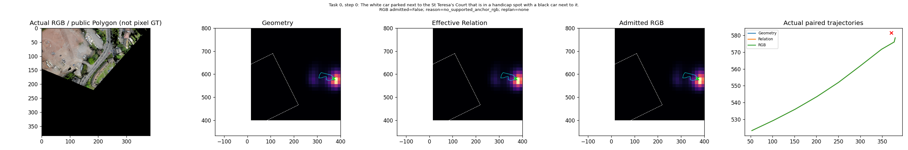
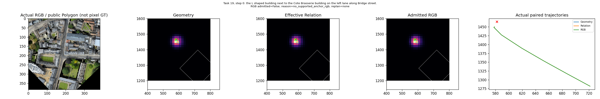
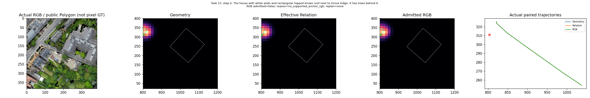
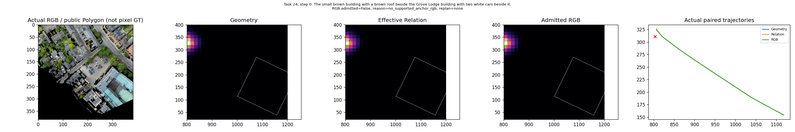
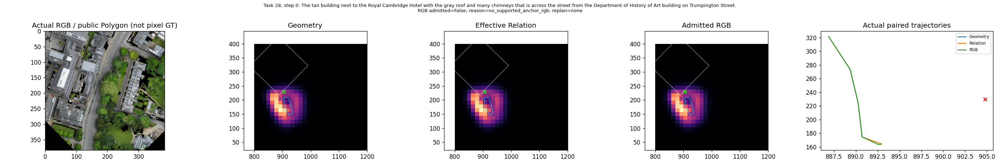
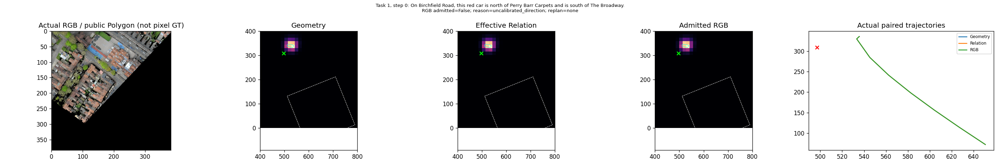
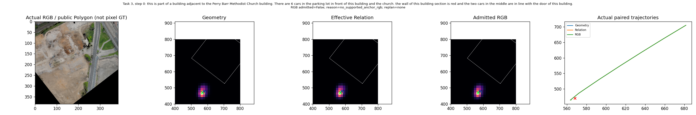

固定56任务、168次真实闭环。黄色为公开Polygon投影；绿色叉为事后GT位置，不是人工像素Mask。

The white car parked next to the St Teresa's Court that is in a handicap spot with a black car next to it.
step 0原生RGB
the L shaped building next to the Cote Brasserie building on the left lane along Bridge street.
step 0原生RGB
The house with white walls and rectangular hipped brown roof next to Grove lodge. It has trees behind it.
step 0原生RGB
The small brown building with a brown roof beside the Grove Lodge building with two white cars beside it.
step 0原生RGB
The tan building next to the Royal Cambridge Hotel with the gray roof and many chimneys that is across the street from the Department of History of Art building on Trumpington Street.
step 0原生RGB
On Birchfield Road, this red car is north of Perry Barr Carpets and is south of The Broadway.
step 0原生RGB
this is part of a building adjacent to the Perry Barr Methodist Church building. There are 6 cars in the parking lot in front of this building and the church. the wall of this building section is red and the two cars in the middle are in line with the door of this building.
step 0原生RGB